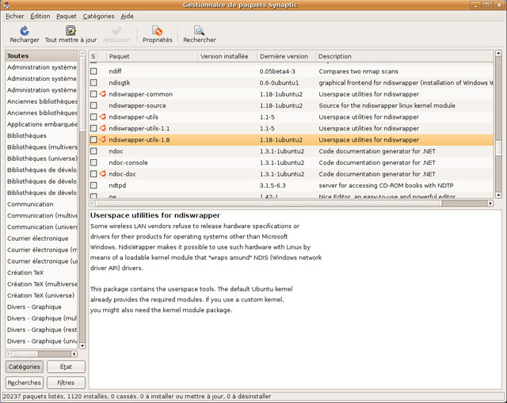
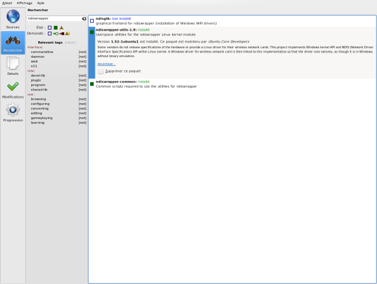
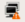
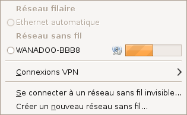
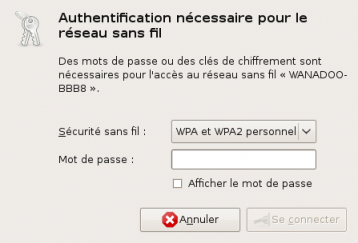
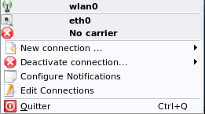
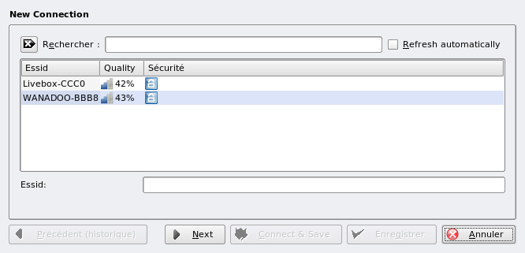
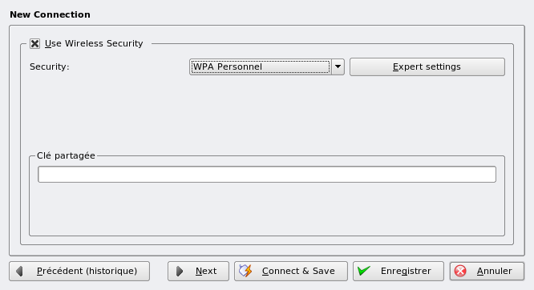
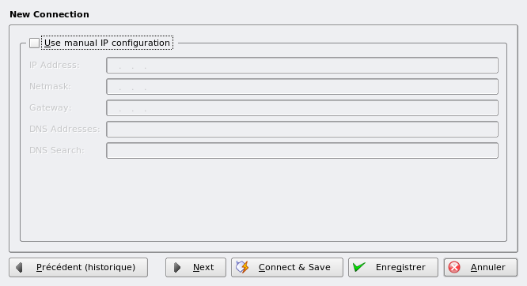
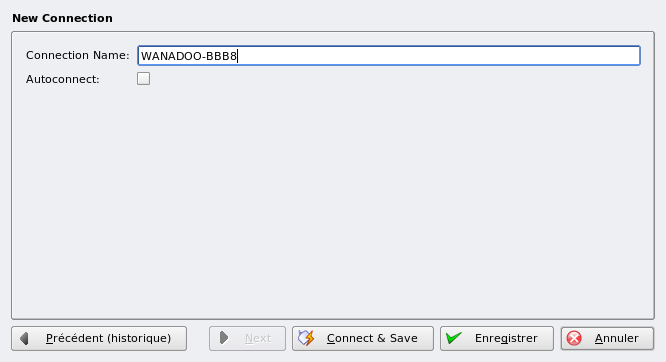

Vous êtes sur votre sublime (K)ubuntu mais votre ordinateur est trop loin de la prise téléphonique permettant de se relier à Internet. Vous pouvez donc utiliser une clé / carte Wi-Fi. Le drame arrive : Ubuntu ne la reconnaît pas ou ne veut pas se connecter à Internet ! :( Mais à tout problème il y a une solution, notamment ce tuto qui va vous permettre d'utiliser votre connexion Internet en Wi-Fi ! :)
Remarque : ce tutoriel est destiné à Ubuntu et ses dérivés, mais il peut-être applicable à d'autres distributions Linux en changeant quelques commandes, notamment avec le gestionnaire de paquet. De plus, des notions de base concernant Linux sont recommandées (connaitre et utiliser un gestionnaire de paquet, savoir ouvrir un terminal / console, ...).
Linux reconnait-il nativement votre équipement Wi-Fi ?
Tout d'abord, on va voir si Linux reconnait votre carte nativement, c'est-à-dire que les pilotes sont déjà intégrés et installés dans Ubuntu. Pour cela, entrez la commande suivante dans un terminal / une console :
iwconfig
Si vous recevez en retour un message contenant l' interface wlan*, où * est un chiffre, ou que vous pouvez lire (le message peut différer selon le matériel mais le contenu reste semblable) :
lo no wireless extensions.
eth0 no wireless extensions.
wlan0 IEEE 802.11g ESSID:off/any
Mode:Managed Frequency:2.437 GHz Access Point: Not-Associated
Bit Rate=54 Mb/s
Power Management:off
Link Quality:0 Signal level:0 Noise level:0
Rx invalid nwid:0 Rx invalid crypt:0 Rx invalid frag:0
Tx excessive retries:0 Invalid misc:0 Missed beacon:0
Cela signifie que votre équipement Wi-Fi est bien reconnu par Ubuntu et vous pouvez passer à l'étape 3 du tutoriel tout de suite. :soleil: Si vous ne recevez que des messages "no wireless extensions", vous allez devoir installer les pilotes vous-même, ce qui va prendre plus de temps. :'(
Recherche de pilotes pour votre équipement Wi-Fi
Il faut maintenant s'informer si votre équipement Wi-Fi possède des pilotes Linux, ce qui n'est pas le cas de toutes les cartes et clés Wi-Fi.
Vous allez donc commencer à regarder quelle est la référence de votre équipement Wi-Fi (nom, marque, chipset, ...). Si vous avez des problèmes à trouver cette référence, vous pouvez entrer dans une console :
cette commande pour afficher tous les périphériques de réseau PCI de l'ordinateur, si vous possédez une carte Wi-Fi interne ;
lspci | grep -i network
ou bien cette commande pour afficher les périphériques USB de l'ordinateur, si vous possédez un dongle USB .
lsusb
Une fois la référence en main, consultez cet article du wiki de ubuntu-fr.org qui recense pratiquement toutes les cartes Wi-Fi. Ce tableau est, comme vous pouvez le voir, classé par marque. Recherchez-y votre carte / clé Wi-Fi. Deux cas sont possibles :
Soit votre équipement Wi-Fi possède des pilotes libres pour Linux. Dans ce cas, lisez l'aide complémentaire renseignée dans le tableau et suivez la démarche d'installation proposée par le wiki. Une fois installée, rendez vous à la partie 3 de ce tutoriel. ;)
Soit votre équipement Wi-Fi ne possède pas de pilotes libres pour Linux. Dans ce cas, si on vous propose de l'installer via Ndiswrapper, lisez la partie 2 de ce tutoriel. ;) Si on vous dit que votre clé / carte Wi-Fi n'est pas du tout utilisable sous Linux, qu'il n'y a aucun moyen pour l'installer, vous n'avez vraiment pas de chance. :( Renseignez-vous quand-même sur Internet : moteurs de recherche, forums, blogs, ... Vous y trouverez peut-être une réponse. :)
Si vous devez installer vos pilotes avec Ndiswrapper, tout se passe ici. Cette méthode consiste à utiliser des pilotes Windows de votre carte / clé Wi-Fi et les utiliser sous Linux.
Recherche des pilotes Windows de votre carte / clé Wi-Fi
Pour cela, il faut tout d'abord avoir les pilotes Windows de la carte / clé Wi-Fi.
Oui, mais je les trouve où, mes pilotes Windows ? o_O
Pour pouvoir installer les pilotes, il vous faut les fichiers .inf que Windows utilise pour la carte Wi-Fi. On peut les trouver à plusieurs endroits : sur le CD d'installation de votre clé Wi-Fi, sur le disque dur d'un Windows ayant cette clé Wi-Fi déjà installée ou aussi sur Internet sur les sites des fabricants. Regardez également le tableau de la liste des équipements Wi-Fi de tout à l'heure. Certains produits indiquent parfois où télécharger les pilotes Windows. :)
Remarque : le fichier en inf peut avoir un nom totalement différent de la marque de la clé Wi-Fi (ma clé Wi-Fi est une Thomson alors que mon fichier .inf s'appelle sis163u.inf). Ce nom différent peut correspondre au chipset de la carte Wi-Fi.
De plus, s'il y a d'autres fichiers tel que des .cat ou .sys ayant le même nom que le .inf, mettez-les dans le même dossier que celui-ci, cela peut aider l'installation du pilote.
Installation de Ndiswrapper
Maintenant les pilotes en main, vous allez installer Ndiswrapper sur votre machine. Le paquet à installer s'appelle ndiswrapper-utils-1.9. Trois cas de figure se présentent :
Vous pouvez vous connecter à Internet sous Ubuntu via un autre moyen de connexion (Ethernet par exemple). Il suffira d'installer le paquet comme il sera indiquer plus tard.
Vous n'avez pas de connexion Internet fonctionnelle sous Ubuntu, mais il vous reste le CD d'installation d'Ubuntu. Les paquets de Ndiswrapper sont sur ce CD. Vous allez donc configurer le gestionnaire de paquet pour qu'il utilise le CD. Tout d'abord, insérez votre CD d'installation dans votre lecteur de CD (ça va c'est pas trop compliqué :p ). Ensuite lancez une console et faites :
sudo apt-cdrom add
Suivez les instructions données à l'écran et on va pouvoir installer Ndiswrapper (Par contre, n'enlevez pas le CD jusqu'à la fin de l'installation de Ndiswrapper :D ).
Soit vous n'avez pas de connexion Internet fonctionnelle sous Ubuntu, ni votre CD d'installation. Il faut alors un ordinateur capable d'aller sur Internet et télécharger les paquets sur le site : http://packages.ubuntu.com/ puis de transférer les paquets sur clé USB ou sur CD. Pour installer un paquet, double-cliquez sur celui-ci. Le problème de cette méthode est qu'elle ne gère pas les dépendances, c'est-à-dire que si les paquets que vous téléchargez manuellement ont besoin d'autres paquets, vous devrez aller chercher ces derniers sur le site. Et si ces paquets ont besoin également de dépendances, il faut les télécharger et ça peut durer un bon petit moment comme ça. :lol:
Vous êtes maintenant prêt à installer. Pour les deux premiers cas de figure, installez le paquet ndiswrapper-utils-1.9 :
Via l'interface graphique :

en utilisant Synaptic pour Ubuntu (Système→Administration→Gestionnaire de paquets Synaptic) ;

en utilisant Adept pour Kubuntu (K→Applications→Système→Gestionnaire de paquetages) .
En passant par la console en tapant la commande :
sudo apt-get install ndiswrapper-utils-1.9
C'est bon, c'est installé, vous allez pouvoir installer votre équipement Wi-Fi ! :)
Installation des pilotes Wi-Fi via Ndiswrapper
Je précise que je vais faire l'installation via la console. Il existe un logiciel s'appelant NdisGTK permettant la même chose graphiquement mais je ne détaillerai pas cette méthode dans ce tutoriel.
Après l'installation de ndiswrapper, ouvrez votre console et tapez :
ndiswrapper
Ça vous affiche les différentes commandes possibles pour Ndiswrapper comme ceci :
install/manage Windows drivers for ndiswrapper
usage: ndiswrapper OPTION
-i inffile install driver described by 'inffile'
-a devid driver use installed 'driver' for 'devid' (dangerous)
-r driver remove 'driver'
-l list installed drivers
-m write configuration for modprobe
-ma write module alias configuration for all devices
-mi write module install configuration for all devices
-v report version information
where 'devid' is either PCIID or USBID of the form XXXX:XXXX,
as reported by 'lspci -n' or 'lsusb' for the card
Si vous voyez à peu près ceci, vous avez donc bien installé ndiswrapper. Ces différentes options de Ndiswrapper vont permettre d'installer la clé Wi-Fi.
Tout d'abord, il faut aller dans le répertoire où se trouve le pilote Windows en .inf grâce à la commande cd suivie du dossier dans lequel vous voulez aller. Par exemple, si votre fichier est sur le bureau, vous taperez la commande :
cd Desktop
Pour voir les fichiers se trouvant dans le dossier dans lequel vous êtes, faites :
ls
Dès que vous vous trouverez dans le bon dossier, optez pour la commande permettant à Ndiswrapper d'installer le pilote via le .inf :
sudo ndiswrapper -i nomdufichier.inf
Bien entendu, vous remplacez le nomdufichier.inf par le fichier .inf de votre clé Wi-Fi. :D Cette commande permet d'installer le pilote Wi-Fi. Pour vérifier qu'il a bien été installé, tapez la commande :
(sis163u est mon pilote Wi-Fi, le vôtre sera différent en fonction du fichier .inf et donc de votre carte Wi-Fi.) Il faut bien voir driver installed et device present car le 1er signifie que le pilote a été bien installé et le 2nd signifie que la clé Wi-Fi a bien été détectée.
Enfin, on crée un alias et on charge le module ndiswrapper avec ces deux commandes :
sudo ndiswrapper -m
et
sudo modprobe ndiswrapper
Activation de la clé / carte Wi-Fi au démarrage
Il faut éditer le fichier /etc/modules via un éditeur de texte. Les amateurs de la console pourront utiliser nano / vim / emacs en utilisant les droits administrateurs avec sudo. Pour modifier en mode graphique, lancez la commande suivante :
sous Ubuntu (Gnome) ;
gksu gedit /etc/modules
sous Kubuntu (Kde) .
kdesu kate /etc/modules
Il suffit ensuite d'ajouter, en créant une nouvelle ligne, le mot "ndiswrapper". Enregistrez le fichier et c'est bon !
Et voilà, votre clé Wi-Fi est installée mais vous n'avez toujours pas votre connexion à Internet. Ne vous inquiétez pas, on va voir ça tout de suite. :)
Notre clé Wi-Fi est installée, youpi ! :) Mais pour l'instant, on ne peut toujours pas aller sur Internet. :(
À partir d'ici, il existe plusieurs solutions pour se connecter à Internet. J'ai choisi de n'en développer qu'une seule : on va utiliser un programme s'intitulant NetworkManager (ou KNetworkManager si vous êtes sous Kubuntu). Normalement, (K)NetworkManager est installé par défaut sous Ubuntu, vous devez avoir une icône comme ceci dans le tableau de bord :

ou
.
NetworkManager sous Ubuntu (Gnome)
Faites un clic-droit sur l'icône
et cliquez, si ce n'est pas activé, sur Activer le Wi-Fi. Maintenant, faites un clic-gauche sur l'icône. Vous devez voir ceci :

Cliquez sur le réseau qui correspond à votre routeur (Livebox, FreeBox, ...). Vous tombez sur la boite de dialogue ci-dessous vous indiquant d'entrer la clé WEP/WPA (s'il y en a besoin pour se connecter).

Après avoir validé, l'icône de NetworkManager cogite un peu et si tout se passe bien vous devez être connecté à internet. :)
KNetworkManager sous Kubuntu (KDE)
Un clic-droit ou gauche sur l'icône
vous affiche ce menu :

Vérifiez tout d'abord que la connexion Wi-Fi est activée via le sous-menu Desactivate connection .... Puis allez dans le sous-menu New Connection ... et cliquez sur l'interface correspondant à votre connexion Wi-Fi (la plupart du temps wlan0). Suivez ensuite les étapes proposés :

choisissez votre connexion correspondant à votre routeur (Livebox, Freebox, ...) puis faites Suivant (Next) ;

entrez votre clé Wi-Fi dans le formulaire puis faites Suivant (Next) ;

rien à faire si vous vous connectez en DHCP, faites donc Suivant (Next) ;

Choisissez un nom pour votre connexion (ou laissez tel quel). Cochez Autoconnect si vous voulez vous connectez automatiquement. Puis faites Connect & Save.
L'icône de KNetworkManager commence à gigoter et normalement vous devez être connecté à Internet. :)
Voilà, j'espère que vous avez réussi à vous connecter avec une carte / clé Wi-Fi grâce à ce tutoriel. Pour plus d'informations, si vous avez des problèmes ou si vous avez vu des erreurs dans mon tuto (personne n'est parfait :D ), n'hésitez pas à aller sur le forum !